First, let’s make a drum that makes a sound when it’s hit.
Activity Checklist
Start a new Scratch project, and delete the cat sprite so that your project is empty. You can find the online Scratch editor at jumpto.cc/scratch-new.
Add a drum sprite to your blank project, as well as adding a suitable backdrop image to the stage.
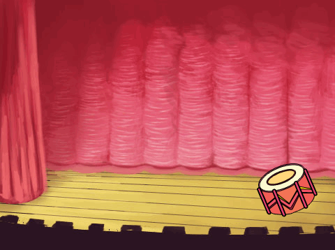screenshot
If you’re not sure how to do this, the previous project (“Lost in Space”) will help you!
Let’s program the drum to play a sound when it’s clicked. Make sure the drum sprite is selected and add this code:
when this sprite clicked
play drum (1 v) for (0.25) beats
Click the drum to try out your new instrument!
You can also change how the drum looks when it’s clicked, by creating a new costume. Click the ‘Costumes’ tab, and you’ll see the drum image.
screenshot
Right-click on the costume and click ‘duplicate’ to create 2 copies of the costume.
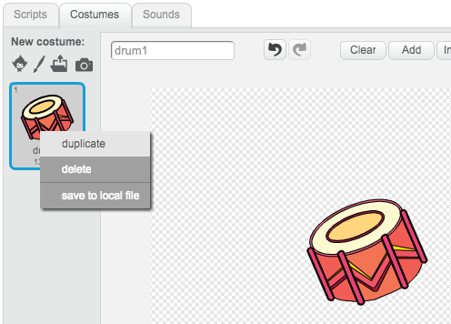screenshot
Click on the new costume (called ‘drum2’) and then select the line tool and draw lines to make it look like the drum is making a sound.
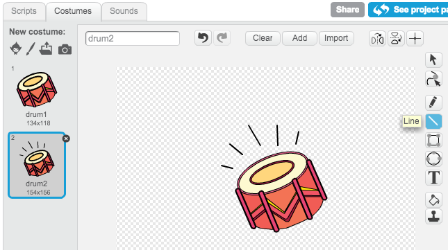screenshot
The names of the costumes aren’t very helpful at the moment. Rename the 2 costumes to ‘not hit’ and ‘hit’ by typing the new name of each costume into the text box.
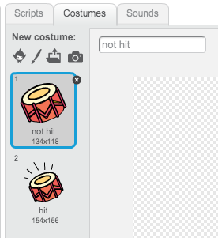screenshot
Now that you have 2 different costumes for your drum, you can choose which costume is displayed! Add this code to your drum:
when flag clicked
switch costume to [not hit v]
when this sprite clicked
switch costume to [hit v]
play drum (1 v) for (0.25) beats
switch costume to [not hit v]
The code block for changing the costume is in the Looks section.
When clicked, your drum should now change costumes, to look like it’s been hit, and then change back again.
Save your project
Challenge: Improving your drum
Can you change the sound that the drum makes when it’s clicked?
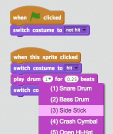screenshot
Can you also get the drum to make a sound when the spacebar is pressed? You’ll need to use this event block:
when [space v] key pressed
You can copy your existing code by right-clicking on it and clicking ‘duplicate’.
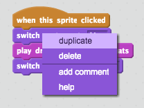screenshot
Save your project
Step 2: Coding a Singer
Let’s add a singer to our band!
Activity Checklist
Add another 2 sprites to your stage; a singer and a microphone.
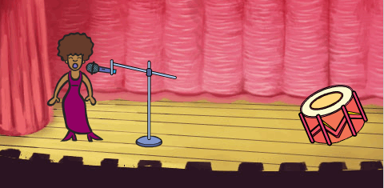screenshot
Before you can make your singer sing, you need to add a sound to your sprite. Make sure that you have selected your singer, then click the ‘Sounds’ tab, and click ‘Choose sound from library’:
screenshot
If you click ‘Vocals’ on the left hand side, you will then be able to choose a suitable sound to add to your sprite.
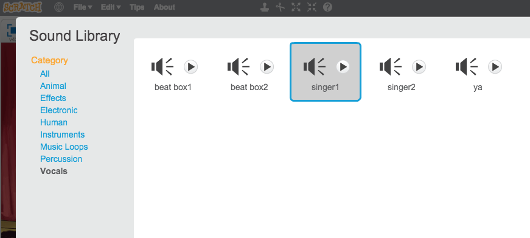screenshot
Now that the sound has been added, you can add this code to your singer:
when this sprite clicked
play sound [singer1 v] until done
Click on your singer, to make sure that she sings when clicked.
Save your project
You can also change the costume of your singer, to make it look like she is singing. Just like with the drum, right-click on the costume to duplicate it, so that you have 2. Rename the 2 costumes to ‘not singing’ and ‘singing’.
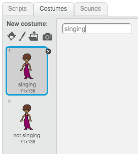screenshot
Add some lines near your singer’s mouth. Your singer should look something like this:
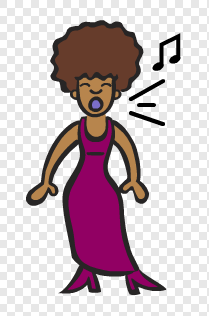screenshot
Now add code to change your singer’s costume when clicked:
when flag clicked
switch costume to [not singing v]
when this sprite clicked
switch costume to [singing v]
play sound [singer1 v] until done
switch costume to [not singing v]
Click on your singer, to test that your new code works.
Save your project
Step 3: Coding a cymbal
So far all of your instruments have used images from the Scratch library. Why not draw a sprite of your own!
Activity Checklist
To draw your own cymbal sprite, click on the ‘Paint new sprite’ icon.
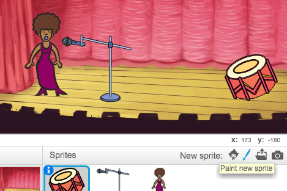screenshot
As you can see, you now have a blank sprite called ‘Sprite1’. Draw your cymbal in ‘costume1’, using a yellow ellipse and some black lines. You should also rename this costume ‘not hit’, just like with your other sprites.
screenshot
Duplicate your cymbal sprite to create a second costume, and remember to name it ‘hit’.
To make your cymbal look like it’s been hit, you can rotate it. To do this, click the ‘Select’ tool and drag to highlight the cymbal. You can then click and drag the circular ‘rotate’ handle to rotate the cymbal.
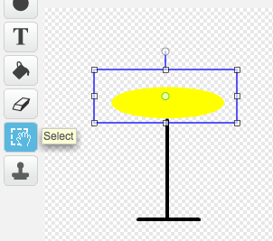screenshot
Your cymbal costumes should look something like this:
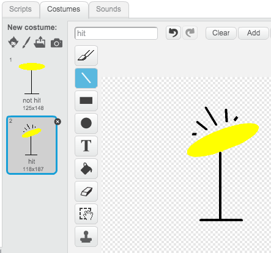screenshot
Your cymbal is probably a bit too big. Click the ‘Shrink’ icon, and you should notice that the mouse cursor changes. Click on your cymbal a few times to shrink it. You can also move your cymbal to a better place on the stage.
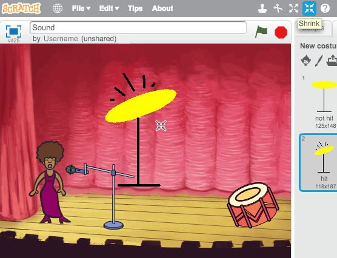screenshot
Next, you should change the name of the sprite, as ‘sprite1’ isn’t a very helpful name! Click the icon for your cymbal sprite, and then click on the blue i (information) icon in the top-left.
screenshot
You can then change the sprite name to something more useful, like ‘Cymbal’!
Now that you have your graphics made, you can add in a sound to the cymbal sprite. Click ‘Choose sound from library’, and then click ‘Percussion’ and choose the ‘cymbal crash’ sound.
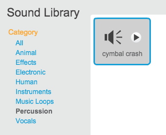screenshot
Add this code to the cymbal, so that it makes a sound and changes costume when clicked:
when flag clicked
switch costume to [not hit v]
when this sprite clicked
switch costume to [hit v]
play sound [cymbal crash v] until done
switch costume to [not hit v]
Test out your cymbal, to see if it works!
Save your project
Step 4: Backing music
You can even add some music for your band to play along to!
Activity Checklist
Click on the stage, and then click the ‘Sounds’ tab and then ‘Choose sound from library’ to add some music to the stage. The music is in the ‘Music Loops’ section.
Add this code to your stage, remembering to select the sound that you chose:
when flag clicked
forever
play sound [eggs v] until done
end
This code repeatedly plays the music that you have chosen. Click the flag to test it out!
You can even add this code to your stage, to allow you to mute and unmute the background music using the ‘m’ and ‘u’ keys:
when flag clicked
set volume to (100)%
forever
play sound [eggs v] until done
end
when [m v] key pressed
set volume to (0)%
when [u v] key pressed
set volume to (100)%
Save your project
Challenge: Make your own band
Use what you’ve learnt in this project to make your own band! You can create any instruments you like, but look at the available sounds and instruments to get some ideas.
screenshot
Your instruments don’t have to be sensible though. For example, you could make a piano made out of muffins!
screenshot
Can you make your own song, or even get together with your friends to make a band?